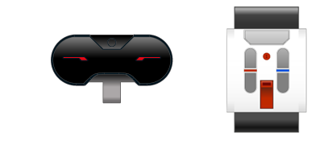

					<table cellpadding="0" cellspacing="0" border="0"><tbody><tr><td>
	
						<h1>使用红外传感器<a name="top"></a></h1>
		<div id="block_831" class="block blockHeader">
				<div class="description"><br>
<br>
红外传感器可以检测从远程红外信标（IR 信标）发送的红外光信号。红外传感器也可以发送自己的红外光信号，并检测其他物体对此光线的反射。 <br>
<br>
红外传感器可以在三种不同模式下使用：近程、信标和远程。</div>
			</div>
	<div id="block_832" class="block blockChaptor">
		<div class="title"><a name="ProximityMode" style="position:relative; top:-10px;"></a>近程模式</div>
		<div class="description">在“近程”模式中，红外传感器发送自己的红外信号，可以检测传感器前方物体对此信号的反射。反射信号的强度可以用于估计物体的接近程度（距离）。<br>
<br>
请参见<a href="./index.html?id=UsingSensors_Infrared_Proximity">使用红外传感器“近程”模式</a>。</div>
	</div>
	<div id="block_833" class="block blockChaptor">
		<div class="title"><a name="BeaconMode" style="position:relative; top:-10px;"></a>信标模式</div>
		<div class="description">在“信标”模式中，IR 信标连续发射特殊信标信号，红外传感器可以检测传感器前方信标的近似位置。<br>
<br>
请参见<a href="./index.html?id=UsingSensors_Infrared_Beacon">使用红外传感器“信标”模式</a>。</div>
	</div>
	<div id="block_836" class="block blockChaptor">
		<div class="title"><a name="RemoteMode" style="position:relative; top:-10px;"></a>远程模式</div>
		<div class="description">在“远程”模式中，红外传感器可以检测 IR 信标上的按钮按压。例如，可以使用“远程”模式对机器人进行远程控制。<br>
<br>
请参见<a href="./index.html?id=UsingSensors_Remote">使用红外传感器“远程”模式</a>。</div>
	</div>
	<div id="block_837" class="block blockTip">
		<div class="title">提示和技巧</div>
		<div class="boxContent">
			<div class="description">红外光就是大多数电视机遥控器所使用的信号类型。您无法看到红外光，但是与可见光一样，如果物体处于传播方向上，则会阻挡它。IR 信标必须具有指向红外传感器的“视线”才能被看到。日光也可能干扰红外信号，虽然常规房间灯光不应影响它。</div>
				</div>
	</div>
	
			<div id="quick">
				<div class="header"><a href="./index.html?id=UsingSensors_Infrared#header">红外 (IR)</a></div>
					<div class="quickText">快速链接</div>
					
					<ul>
	<li><a href="./index.html?id=UsingSensors_Infrared#ProximityMode">近程模式 </a></li><li><a href="./index.html?id=UsingSensors_Infrared#BeaconMode">信标模式</a></li><li><a href="./index.html?id=UsingSensors_Infrared#RemoteMode">远程模式</a></li>					</ul>
			</div>
	
	</td></tr></tbody></table>